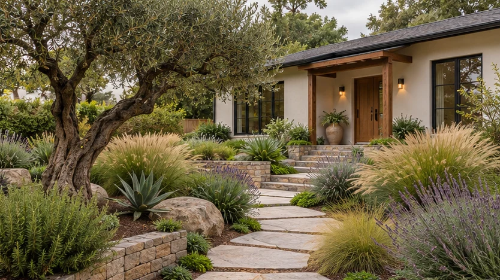

Garden design
A planting plan that suits your yard, your style, and the time you want to spend caring for it.
LANDSCAPE DESIGN & CARE
Thoughtful planting, welcoming paths, and outdoor spaces that feel like home.
Request an estimate
A planting plan that suits your yard, your style, and the time you want to spend caring for it.
Planting, paths, and edging to bring your outdoor plans to life.
Pruning, mulching, and cleanups to keep things looking their best.
Start with your neighborhood, a few photos of your yard, and a short note about what you’d like to change.
On a live site, the landscaping team could follow up to learn more about your yard and schedule a visit.